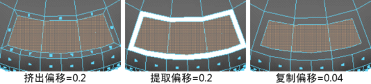

提取选项(Extract Options)
使用这些选项可设置在选择
“编辑网格
>
提取”(Edit Mesh > Extract)
时发生的情况。
分离提取的面
启用（默认）时，在提取面后自动分离它们。提取的面将分离到单独的对象中。不会影响网格中的任何已存在的壳。禁用时，在提取面之后自动选择它们并激活组件模式。
偏移
输入值以偏移提取的面的边。此处还显示用于挤出和复制面的偏移以供比较。该选项可用于对使用
“提取”(Extract)
生成的挤出、裁切对象围绕面制作倒角效果，以及均匀缩放复制的面。

相关主题
从网格提取面
父主题：
“编辑网格”(Edit Mesh)菜单